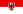
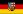

List of German states by GRDP
(Redirected from List of German states by GRP)
This article is about the gross regional domestic product (GRDP) of German states. Most figures are from the Federal Statistical Office of Germany; figures from other sources are otherwise referenced.[1] The GRDP of German states are shown in Euro (€).
{kind=link}
>€600 billion
€300–400 billion
€150–200 billion
<€150 billion
2022 list
[edit]| States | GRDP (bil. EUR€) |
|---|---|
| Germany | 4,121.160 |
| 839.084 | |
| 768.469 | |
| 615.071 | |
| 363.109 | |
| 351.139 | |
| Berlin | 193.219 |
| 174.249 | |
| 155.982 | |
| 150.575 | |
| 118.680 | |
|  Brandenburg | 97.477 |
| Saxony-Anhalt | 78.380 |
| 75.909 | |
| Mecklenburg-Vorpommern | 59.217 |
|  Saarland | 41.348 |
| 39.252 |
See also
[edit]- List of German states by GRDP per capita
- List of German cities by GDP
- List of German states by Human Development Index
- List of German states by fertility rate
- List of German states by life expectancy
- List of German states by unemployment rate
- List of German states by household income
- List of German states by exports
- States of Germany
References
[edit]- ^ "Bruttoinlandsprodukt, Bruttowertschöpfung". 28 March 2024.
Notes
[edit]- Federal Statistical Office of Germany
- Annual average exchange rates: GDP (in US$), according to UN Countries GDP list
- Annual exchange rates (as of 31 Dec) from OFX:
- 2022: 1 EUR = 1.0538